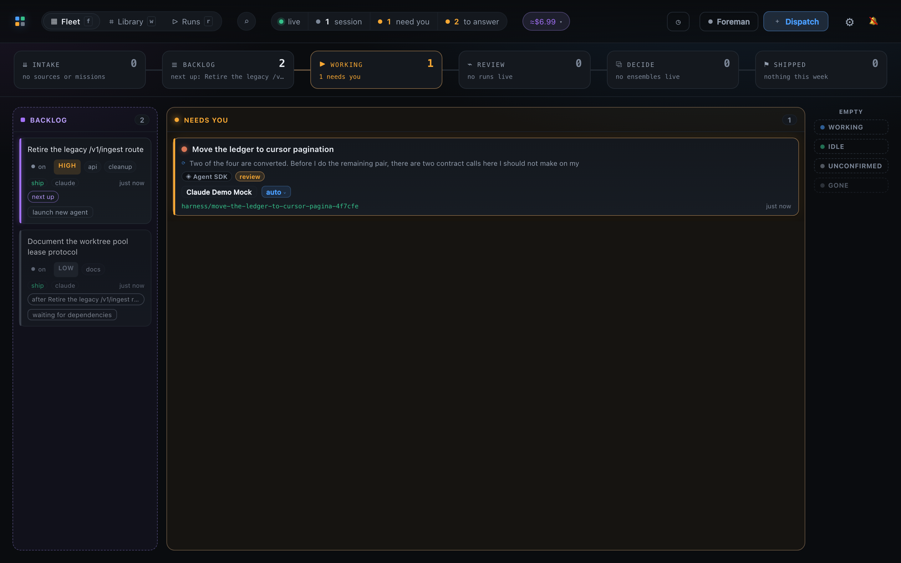
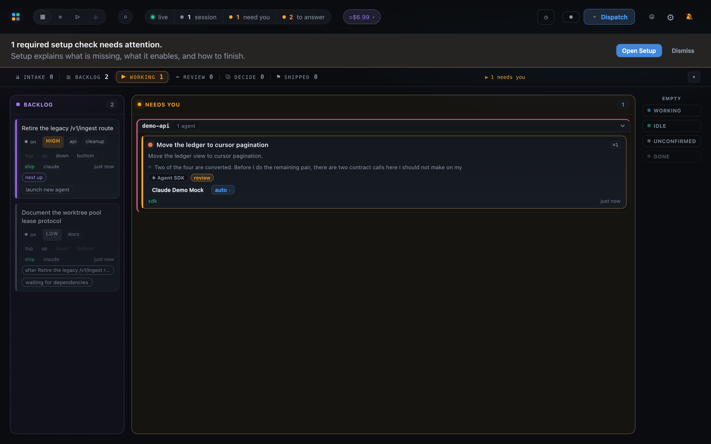
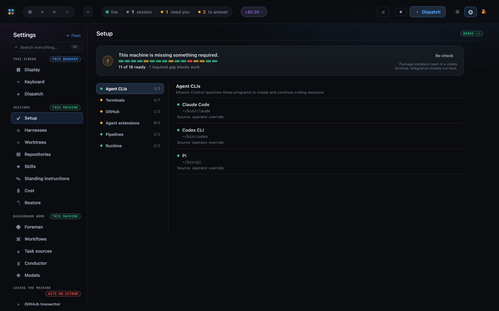
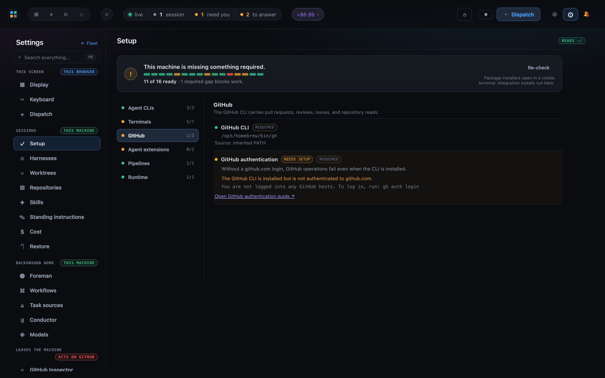
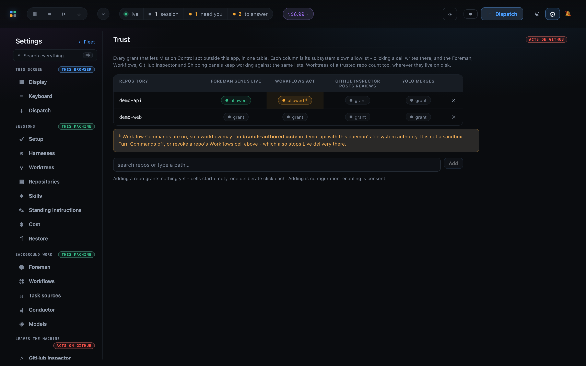
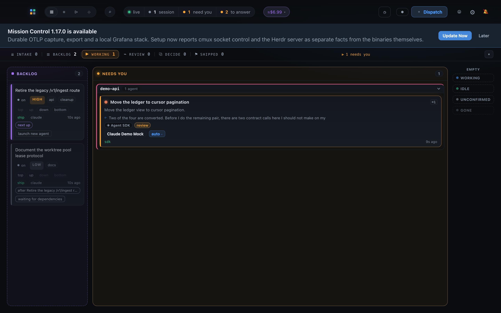

Mission Control / operator guide
Setting up Mission Control
How to install Mission Control on your own machine, teach it about the tools you already use through Settings → Setup, tell the necessary settings apart from the optional ones, and keep the app up to date afterwards.
Step 1
Before you start
Mission Control runs entirely on your machine. It launches the agent CLIs, terminals, and the GitHub CLI you already have, so the prerequisites below are the handful of things it cannot supply for itself.
| Prerequisite | Why | Check it with |
|---|---|---|
| Node.js 24 or newer | Bootstrap, build, and the update preflight all refuse an older runtime. | node --version |
| Git | Clones the repository, and every session works in an isolated worktree. | git --version |
| GitHub CLI, authenticated | Carries pull requests, reviews, issues, and repository reads. Required. | gh auth status |
| At least one agent CLI | Claude Code, Codex, or Pi. Mission Control launches these to create sessions. | claude --version |
| Apple Silicon Mac desktop app only | The packaged macOS app refuses an Intel host rather than building one that cannot run. | uname -m |
| Xcode command line tools desktop app only | Packaging compiles a small native module with node-gyp. | xcode-select -p |
You do not have to get this right first
Nothing here has to be perfect before you install. Mission Control inspects the machine itself and tells you what is missing in Settings → Setup, with an install command or a documentation link on every unsatisfied row. Install first, then work down that panel.
Step 2
Install it
There are two ways to run Mission Control, and they are not exclusive: both read the same
state directory at ~/.mission-control, and the desktop app adopts an already
running daemon instead of starting a second one.
The desktop app
A native macOS app that supervises the daemon and keeps delivering alerts with the window closed, which a browser tab cannot do. It also keeps itself current from published releases. Choose this if you just want to use Mission Control.
The checkout
The daemon and dashboard run straight from a clone, in your browser. Choose this to work on Mission Control itself, to run it on Linux, or to stay on a specific commit.

Option A: install the desktop app (macOS, recommended)
# 1. Get the source. Any location you like; this clone is only the launch pad.
git clone https://github.com/teamupstart/mission-control.git
cd mission-control
# 2. Build and install /Applications/Mission Control.app
make installThat is the whole install. Run it as your signed-in account, never with sudo. It:
- checks the prerequisites first, so a missing one costs seconds instead of failing at the end of a full build;
-
creates a separate clone at
~/.mission-control/app-srcthat only the updater ever touches. Your own checkout is never fetched, rebuilt, or checked out by it. Budget roughly 1 to 2 GB of disk for that clone, and delete it freely: the cost is one fresh clone next time; -
checks out the newest stable release, or the default branch tip while no release exists
yet.
make install ARGS="--ref v1.2.3"installs a specific ref instead, andmake install ARGS="--dry-run"prints what it would do and changes nothing; -
verifies the packaged app's version against the source tree before it replaces anything
in
/Applications, then swaps the bundle atomically. A failed install leaves the app you already had; -
writes an install receipt at
~/.mission-control/install-receipt.json. That receipt is the only evidence the app has that it is updater-managed, which is what automatic updates depend on.
Re-running make install is safe: every step detects its own completion. If
/Applications is not writable, macOS asks for administrator authorization only
at the final swap, once the new bundle is complete and verified.
Both the app and its updater build the bundle on your own Mac. The source, the release
metadata and the npm dependencies are all fetched, but the application itself is never
downloaded as a prebuilt bundle, so Gatekeeper has nothing to quarantine. It opens
normally, with no right-click Open and no xattr workaround.
Closing the window hides the app so alerts keep firing; quit from the tray menu. The tray also offers Start at login and Install Claude integrations…, which wires the status hooks and the review MCP server at the app's own bundled paths.
Option B: run it from the checkout
git clone https://github.com/teamupstart/mission-control.git
cd mission-control
make init # deps, build, and the Claude status hooks
make dev # daemon + Vite, then open http://127.0.0.1:5173
make init is idempotent and safe to repeat. It installs dependencies, builds
the application, and merges the Claude status hooks into
~/.claude/settings.json without replacing your other hooks. It checks the Node
version before it changes anything, and each failed check prints the command that fixes it.
Vite answers within a moment; the daemon takes a few seconds longer, and requests made in that window have nowhere to go. That is expected and prints one line rather than a stack per request.
For a production-shaped run, where the daemon serves the built dashboard on one port:
npm run build
npm start # http://127.0.0.1:7317To keep it running across logins on macOS, install it as a LaunchAgent:
npm run install-service # start now, and at every login
npm run install-service -- --uninstallInstall the hooks from a durable clone
The hook installer writes absolute paths into ~/.claude/settings.json, and
those paths do not follow a checkout that is later renamed or deleted. Every Claude
session on the machine then fails every hook event with MODULE_NOT_FOUND.
Run make init from a clone you intend to keep. Setup carries a
Claude Code hooks row that names a dead path when one appears.
Step 3
First launch
Open the dashboard, at http://127.0.0.1:5173 under make dev, at
http://127.0.0.1:7317 under npm start, or in the desktop app's
window. Three things happen the first time, and all three are pointing you at the same
place.
- A reminder appears above the dashboard. It names how many required checks need attention and offers Open Setup. It also returns later if a required capability regresses, so dismissing it is not permanent. Dismissal is stored on this machine only.
- The "Set up this machine" tour runs once. Seven stops: the gear, Setup in the Settings rail, the dependency list, Re-check, then Trust, its repository-by-grant matrix, and the row that adds a repository to it. It runs no remedy and clicks no grant. Start it again any time from Help & tours at the bottom of the Settings rail, or from Start Set up this machine tour in the command palette (⌘K).
- Your existing sessions show up immediately. Discovery needs no configuration, though sessions start with a coarse grey "running" status until the Claude hooks are installed and a new session is started. Hooks only affect sessions launched after they are installed.

You can reach the Setup panel at any time: the gear
in the top bar, then Setup under Sessions in the Settings rail.
The direct link is #/settings/setup.
Step 4
Set the machine up from the Setup panel
Setup is the machine-wide view of every external tool Mission Control can use: agent CLIs, terminal backends, GitHub CLI authentication, agent extensions, external pipeline engines, and the system Node.js runtime. It reads your home directory and changes nothing on its own.

Reading the panel
- The verdict, at the top. One sentence for the whole machine, either This machine can run sessions or This machine is missing something required, over one tick per check and a count such as 11 of 16 ready · 1 required gap blocks work. The verdict never changes as you move around the rail, because it is about the machine and not about what you are reading.
- The family rail. Six families, each with its own ready count and a mark when it has gaps. One family's rows are mounted at a time. The panel opens on the family holding a required gap, then any gap, and then stays where you put it: a Re-check that repairs the family you are reading reports into that family rather than moving the rail out from under you.
- A satisfied row shows a green dot, its name, the path or evidence found, and where that path came from: inherited PATH, login shell, operator override, or a supported application location. Paths are written relative to your home directory, with the absolute path on hover.
- An unsatisfied row shows an amber dot, a status word, a requirement badge, the sentence describing what is unavailable while it stays that way, and a remedy.
| Status | What it means |
|---|---|
| Ready | Found and usable. The row shows the evidence and its source. |
| Missing | Not installed at all. The remedy is an install command or a documentation link. |
| Needs setup | Installed but not usable yet, for example a GitHub CLI with no login, or Herdr with its server stopped. Installing again would repair nothing, so the remedy is the actual missing step. |
| Unknown | The probe could not reach a conclusion. This never raises the reminder banner on its own. |
Fixing a row
Unsatisfied rows carry one of four kinds of help, and none of them runs an installer inside the daemon.
- A copyable command. Press Copy and run it yourself. A runnable package-manager remedy additionally offers Run in a terminal: choose an available backend and Mission Control opens a visible terminal running the catalog's fixed command. The daemon owns the arguments, working directory, and title; the browser sends only the dependency id and the terminal backend. The terminal stays open after the command exits so you can read its exit code.
- A documentation link, where the install is not a single command.
- A service action, where the tool is installed but not running. Start the Herdr server and Open cmux open no terminal: the daemon starts the thing, waits for it to answer, and the panel re-reads the machine on its own.
- An integration install, such as Install Pi integration, which verifies the bundle in a bounded child process before installing and refuses pooled checkouts.
When an install finishes, press Re-check. Opening an installer alone never marks a row ready. Mission Control inspects the machine again and updates the verdict, the rail counts, and the rows in place.
Step 5
What is necessary, and what is not
Every row carries its own requirement level, and the panel shows the badge on any row that
is not satisfied. required is the only level worth repeating on a healthy row,
so it is also shown there.

required. The second one is why installing a tool and
being able to use it are tracked as separate facts: the CLI is present and the machine
still cannot open a pull request.
Required: the machine cannot do its job without these
These are the rows counted by N required gaps blocks work in the verdict.
| Row | Family | What is lost without it |
|---|---|---|
| GitHub CLI | GitHub | Mission Control cannot inspect, open, review, or merge GitHub work. |
| GitHub authentication | GitHub | GitHub operations fail even with the CLI installed. Fix with gh auth login. |
| A terminal window Mission Control can open | Terminals | Dispatches cannot open a visible terminal window on their checkout. This row is derived from the terminals you do have, rather than naming one product. |
| Node.js | Runtime | App updates cannot be prepared, and Node-based tools cannot run. The minimum is the installer's, currently Node.js 24. |
Two further required rows exist but appear only when they are already broken, because their healthy state is "you never installed this" and nagging about that would be wrong:
- Pi extension, when an installed Pi integration is broken. A broken one can silently lose Mission Control integration or stop every Pi session from starting.
- Claude Code hooks, when hooks are installed and their script has gone. That state is strictly worse than never installing them: every Claude hook event on the machine now fails loudly. See the durable-clone warning in Install it.
Recommended: install at least one
The three agent CLIs are each recommended rather than required, because no
single one of them is the one you must have. Without any of them, Mission Control has
nothing to launch.
| Row | Install with | Notes |
|---|---|---|
| Claude Code | npm install -g @anthropic-ai/claude-code |
Also backs Claude-powered background jobs such as titling and review. |
| Codex CLI | Linked install guide | Needed for Codex sessions and Codex-backed background jobs. |
| Pi | npm install -g @earendil-works/pi-coding-agent |
Pi's Agent SDK runtime additionally needs the Pi extension row ready. |
Optional: capability you add if you want it
None of these block anything. Each row's sentence starts with Adds, and skipping all of them leaves a working Mission Control with fewer choices in it.
| Row | Family | What it adds |
|---|---|---|
| tmux | Terminals | Durable detached sessions, provided an installed emulator can raise them. |
| WezTerm | Terminals | Scriptable terminal windows, and can raise detached tmux sessions. |
| Ghostty | Terminals | Native terminal windows Mission Control can discover and focus on macOS. |
| iTerm2 | Terminals | Scriptable iTerm2 windows, and can raise detached tmux sessions on macOS. |
| cmux | Terminals | Visible, durable workspaces that need no second terminal to raise them. |
| Herdr | Terminals | Durable default-server workspaces, pane control, and full-client reattachment on macOS and Linux. |
| Claude Code plugins | Agent extensions | Plugin-provided tools, hooks, and commands inside Claude sessions. |
| Mission Control skills | Agent extensions | Mission Control's reusable workflow skills, managed in Settings → Skills. |
| ai-conductor | Pipelines | Commissioning and observing gated external pipeline runs. |
Two terminals report more than "installed"
cmux reports three facts, and two of them are not installation. Its
control socket exists only while the cmux app is running, and cmux ships a default that
admits only processes started inside cmux, which the daemon is not. So an installed cmux
can still be unusable. Setup offers Open cmux for the closed app, and
Allow Mission Control to drive cmux for the refusing socket, which
changes exactly one value in ~/.config/cmux/cmux.json and copies the previous
file to a timestamped .bak first.
Herdr reports two: the binary, and whether its default server is answering. With the server stopped the row offers Start the Herdr server instead of the install guide, because installing again repairs nothing.
A reasonable target
A machine that reads This machine can run sessions with the agent CLI you use,
an authenticated gh, a terminal Mission Control can open, and Node.js 24 is
fully set up. The remaining optional rows are preferences, and the verdict says so: it
reports them as no required gaps plus a count of optional tools that would add
capability.
Step 6
Settings beyond Setup
Setup is about tools on the machine. The rest of Settings is about behavior, and it is grouped by how far each group reaches: This screen, Sessions, Background work, and Leaves the machine. Each panel also carries its own scope badge, which is never softer than the truth.
Worth visiting after Setup
- Trust acts on GitHub is the one place you have to visit if you want Mission Control to act on its own. Four subsystems act outside the app, and each keeps its own list of repositories it may act in: Foreman sends live, Workflows deliver repairs and run Commands, the GitHub Inspector posts reviews, and Shipping merges - which the table heads YOLO merges, the only one of the four whose column is not named after its panel. Trust is one table over all four, a row per repository and a column per grant. Adding a repository grants nothing: every cell starts off, and each one is a deliberate click. A fresh install therefore acts nowhere until you say otherwise, which is the intended starting point rather than a gap to close.
-
Repositories decides which directories are walked to find your checkouts.
The saved defaults are
~/workspace,~/code,~/dev, and~/upstart. Add yours here if your repositories live somewhere else, otherwise the dispatch picker will not find them. - Harnesses chooses whether each agent's dispatched sessions run on the Agent SDK or in a terminal, and which terminal backend. The defaults are sensible; come here when Setup has just made a new backend available.

Safe to leave alone
Everything else ships with a working default and can wait until you have a reason. Display, Keyboard, and Dispatch are browser-local preferences that never reach the daemon. Models, Cost, Foreman, Workflows, Task sources, Conductor, Standing instructions, Worktrees, GitHub Inspector, and Shipping all have defaults that work on a fresh install, and the two that act on GitHub do nothing at all until you grant them a repository in Trust.
Launch-time environment variables are a separate escape hatch, not a setup step. You do not
need any of them for a normal install. MISSION_HOME moves the state directory,
and the per-tool MISSION_*_BIN overrides point Mission Control at a binary that
is not on PATH. Configuration is the full list.
Step 7
Keep it current
The desktop app updates itself
A managed app, meaning one installed by make install and carrying a receipt,
checks the repository's stable releases through the gh CLI you already
authenticated. It checks after a short startup delay, every six hours with jitter, and once
after returning from a long sleep. You can also ask at any time with
Check for Updates… from the application menu or the tray.

- A banner offers the new version. Full width, with the version, a short plain-text release summary, and Update Now and Later. Deferring hides it until the next check. A release is offered only when its version is strictly newer, so there is no downgrade path.
- Update Now closes nothing. The build starts and Mission Control stays open and usable. The banner becomes a progress bar naming the stage the install has reached, from prerequisites through source, release, checkout, dependencies, build, and verify, with a Cancel.
- Restart and Install is the only part that needs the app gone. It appears once the new version is built and verified, and it takes seconds. A build you defer is kept and pinned, so accepting it later installs immediately rather than spending those minutes again. A failed install restores the previous working bundle.
Before offering an actionable Update Now, the app checks the system Node.js and npm. Node must satisfy the installer's minimum, currently Node.js 24. A missing or incompatible runtime leaves the release visible with a disabled Update Now, an explanation, and Check again. Install or select a supported Node.js, then press Check again.
When updates are deliberately inert
There is no update path in development, on Intel Macs, without a managed-install receipt, without a system Node.js binary, or when the install came from a non-canonical repository. A manual check explains which of these applies. The plain browser dashboard has no update bridge at all: it renders no banner and starts no check.
An application update also covers only the app and its updater-owned clone. A separately installed daemon LaunchAgent still runs from the repository path in its plist and is not changed by it.
Updating a checkout
A clone you run directly is updated the way any clone is, followed by the same idempotent bootstrap that set it up:
git pull
make init # reinstalls deps, rebuilds, refreshes the hooks
If you installed the LaunchAgent, restart it afterwards so the daemon picks up the new
build. If you also installed the desktop app from this clone with make install,
note that the two are independent: updating your checkout does not update the installed app,
and the app's own updater never touches your checkout.
Upgrading Node.js itself is worth a note, because the app's environment is inherited at launch. Switching Node in an unrelated terminal does not change what an already running Mission Control sees. Select the supported version, then restart Mission Control with the corrected environment, and press Re-check in Setup to confirm the Runtime row agrees.
Step 8
When something is wrong
- Start at the verdict. Setup tells you whether the machine can run sessions at all, and a required gap is named on the row that has it.
- Press Re-check after every repair. Setup reads the machine when you ask it to, not continuously, and an opened installer proves nothing by itself.
-
A row that stays wrong after a successful install is usually an
environment question rather than an installation one. Mission Control resolves tools from
the environment it was launched with, so restart it after changing PATH or switching a
version manager.
MISSION_EXECUTABLE_PATHSis the escape hatch for a private tool directory the login shell does not export. -
Every Claude turn prints
MODULE_NOT_FOUNDmeans the hooks point at a checkout that has moved or gone. Re-runnpm run install-hooksfrom a durable clone, or press Install Claude integrations in the desktop app if you have no checkout.
Troubleshooting covers the specific failures in detail, and the documentation index is the map of everything else.